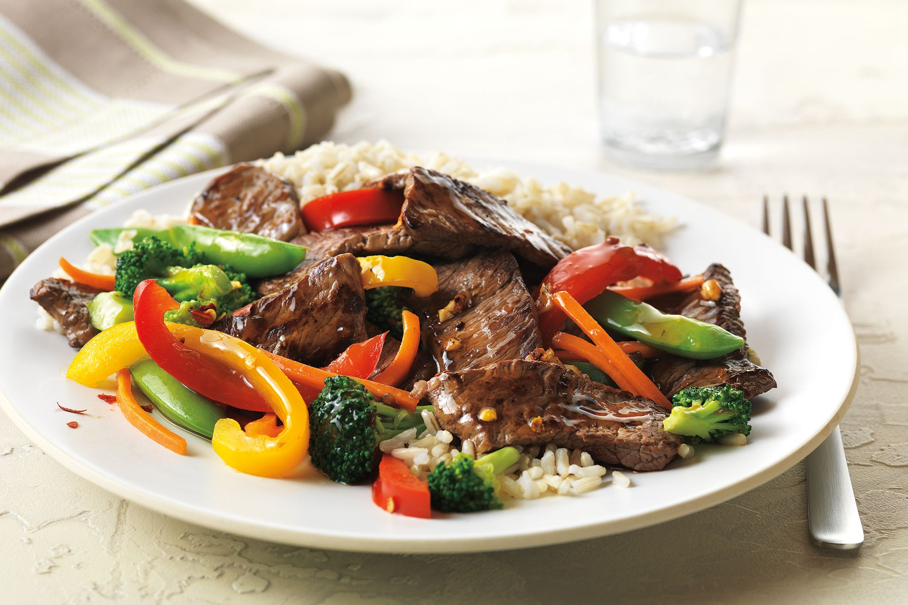

Chicken Marsala
-
Season the chicken breasts with salt and pepper on both sides.
-
Dredge each chicken breast in flour, shaking off the excess.
-
In a large skillet, heat 2 tablespoons of butter and 2 tablespoons
of olive oil over medium-high heat.
-
Add the chicken breasts to the skillet and cook for about 4-5
minutes on each side, or until they are cooked through and golden
brown. Remove the chicken from the skillet and set aside.
-
In the same skillet, add the remaining 2 tablespoons of butter and
2 tablespoons of olive oil.
-
Add the sliced mushrooms and sauté until they are golden brown and
the moisture has evaporated.
-
Pour in the Marsala wine and cook for a couple of minutes to allow
the alcohol to evaporate.
-
Add the chicken broth and let the mixture simmer for a few more
minutes.
-
Stir in the heavy cream and cook for an additional 2-3 minutes
until the sauce thickens slightly.
-
Return the cooked chicken breasts to the skillet and let them
simmer in the sauce for a couple of minutes to absorb the flavors.
- Taste the sauce and adjust the seasoning if needed.
- Garnish with chopped fresh parsley before serving.
Serve the Chicken Marsala with your choice of side dishes such as
pasta, rice, mashed potatoes, or a medley of sautéed vegetables.
Enjoy your flavorful and comforting meal!

- 4 boneless, skinless chicken breasts
- Salt and pepper to taste
- 1/2 cup all-purpose flour, for dredging
- 4 tablespoons butter, divided
- 4 tablespoons olive oil, divided
- 1 cup sliced mushrooms
- 1/2 cup Marsala wine
- 1/2 cup chicken broth
- 1/2 cup heavy cream
- Chopped fresh parsley, for garnish
Beef Stir-Fry with Vegetables
-
In a small bowl, whisk together the soy sauce, oyster sauce, and
cornstarch. Set aside.
-
Heat the vegetable oil in a large pan or wok over high heat.
-
Add the sliced beef and stir-fry for 2-3 minutes, or until it's
browned. Remove the beef from the pan and set it aside.
-
In the same pan, add a bit more oil if needed and sauté the minced
garlic and ginger until fragrant.
-
Add the sliced bell pepper, onion, and broccoli to the pan.
Stir-fry for 3-4 minutes, or until the vegetables are
tender-crisp.
-
Push the vegetables to the side of the pan and pour the sauce
mixture into the center. Let it simmer and thicken for a minute.
-
Return the cooked beef to the pan and toss everything together to
coat the beef and vegetables in the sauce.
- Season with salt, pepper, and red chili flakes if desired.
- Cook for an additional minute, then remove from heat.
- Serve the beef stir-fry over steamed rice or noodles.
Feel free to adjust the ingredients and flavors to your liking.
Enjoy your delicious beef stir-fry without any unnecessary fluff in
the recipe or presentation!

- 1 lb (450g) beef steak, thinly sliced
- 2 tablespoons vegetable oil
- 2 cloves garlic, minced
- 1 teaspoon ginger, minced
- 1 bell pepper, sliced
- 1 onion, sliced
- 1 cup broccoli florets
- 1/4 cup soy sauce
- 2 tablespoons oyster sauce
- 1 tablespoon cornstarch
- Salt and pepper to taste
- Optional: red chili flakes for extra heat
Coconut Curry Lentil Soup
-
In a large pot, heat the coconut oil over medium heat. Add the
chopped onion and sauté until translucent.
-
Add the minced garlic and grated ginger, and cook for an
additional minute until fragrant.
-
Stir in the curry powder, cumin, turmeric, and cayenne pepper.
Cook for another minute to toast the spices.
-
Add the rinsed red lentils, coconut milk, and vegetable broth to
the pot. Stir to combine.
-
Add the diced carrots and potato. Bring the soup to a boil, then
reduce the heat to low, cover, and let it simmer for about 15-20
minutes, or until the lentils and vegetables are tender.
-
Stir in the chopped red bell pepper and spinach or kale. Cook for
an additional 5 minutes until the greens are wilted.
-
Remove the pot from the heat and stir in the lemon juice. Season
with salt and pepper to taste.
-
Serve the coconut curry lentil soup hot, garnished with fresh
cilantro. It pairs well with cooked rice or naan.
Enjoy your flavorful and satisfying vegan meal without any
unnecessary fluff in the recipe or presentation!
- 1 cup red lentils, rinsed and drained
- 1 tablespoon coconut oil
- 1 onion, chopped
- 2 cloves garlic, minced
- 1 tablespoon fresh ginger, grated
- 1 tablespoon curry powder
- 1 teaspoon ground cumin
- 1/2 teaspoon ground turmeric
- 1/4 teaspoon cayenne pepper (adjust to taste)
- 1 can (14 oz) coconut milk
- 4 cups vegetable broth
- 2 carrots, peeled and diced
- 1 potato, peeled and diced
- 1 red bell pepper, chopped
- 1 cup spinach or kale, chopped
- Juice of 1 lemon
- Salt and pepper to taste
- Fresh cilantro, chopped (for garnish)
- Cooked rice or naan (for serving)
Chocolate Lava Cake
-
Preheat your oven to 425°F (220°C). Grease and lightly flour
individual ramekins or small oven-safe bowls.
-
In a microwave-safe bowl, melt the butter and chocolate together
in 20-second intervals, stirring between each interval, until
smooth.
- Stir in the powdered sugar until well combined.
-
Add the whole eggs and egg yolks one at a time, stirring well
after each addition.
- Stir in the vanilla extract.
-
Gently fold in the flour and salt until just combined. Be careful
not to overmix.
- Divide the batter evenly among the prepared ramekins.
-
Place the ramekins on a baking sheet and bake in the preheated
oven for about 12-14 minutes. The edges should be set, but the
centers will still be slightly jiggly.
-
Remove the ramekins from the oven and let them cool for about 1-2
minutes.
-
Carefully invert each ramekin onto a serving plate. The cake
should release easily.
-
Serve the chocolate lava cakes warm, optionally topped with
whipped cream and berries.

- 1/2 cup (1 stick) unsalted butter
- 4 ounces bittersweet or semisweet chocolate
- 1 1/4 cups powdered sugar
- 2 whole eggs
- 3 egg yolks
- 1 teaspoon vanilla extract
- 1/2 cup all-purpose flour
- Pinch of salt
- Optional: Whipped cream and berries for serving